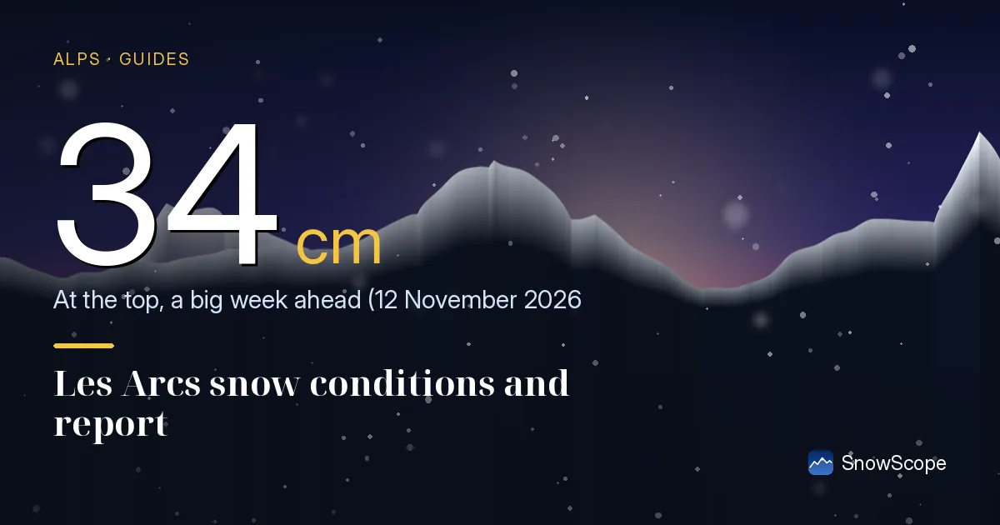

Les Arcs snow conditions and report: 34 cm at the top, a big week ahead (12 November 2026)
On 12 November, Les Arcs holds 34 cm at the Aiguille Rouge (3205 m), 2 cm at mid-mountain (2213 m) and no snow yet at the base villages (1222 m). The week ahead matters more: SnowScope forecasts 69 cm at the top and 46 cm at mid-mountain by 19 November, the first major accumulation of the season.
See the live snow forecast for Les Arcs in the SnowScope appSnow depth, powder alerts and the 3D map, free.

Where the snow is now and where it will be
Early November snow sits high. At the Aiguille Rouge, 34 cm has collected since late October. Mid-mountain has only 2 cm, and the valley floor remains dry. This pattern is normal: in a typical November, the base holds almost nothing, mid-mountain sits at around 25 cm, and the top reaches 73 cm.
In the next week, snow will push down the mountain. The forecast shows 11 cm arriving at the top in the next 24 hours alone, with 46 cm total at mid-mountain and 69 cm at the top by the end of the week. This accumulation will reach higher into Arc 2000 and the mid-slopes, though the lower villages may still see mostly bare ground.
How this compares with past Novembers
Across the past 46 winters, November at Les Arcs is thin at lower elevations and thick above. The base usually has only 6 cm by month's end. At mid-mountain, 25 cm is typical. Up high, 73 cm is the median. Last winter (2025-26) peaked at 100 cm at the base and 212 cm at mid-mountain by season's end, so Les Arcs is a consistent snow maker.
The incoming forecast would bring conditions close to late-November normal at mid-mountain within days. At the top, it pushes well into what December usually delivers (157 cm by month's end).

Which weeks are most reliable for skiers
If you plan to return to Les Arcs later in the winter, mid-mountain is a solid bet from January onwards. In 9 of 10 past winters, 21 weeks held at least 50 cm at that elevation. Week 10 (early March) is nearly certain to have good cover, with a typical depth of 167 cm. At the top, the season is even longer: good snow arrives by early March and stays into May.
April is usually the deepest month at the top (315 cm typical), but the base and mid-mountain peak in February (68 cm and 150 cm). This is a resort where high-altitude terrain is least affected by melt.
Reading the forecast with caution
These are SnowScope estimates for the mapped area, not measurements from the resort's weather station. Forecasts update with each weather run and can shift by 10–20 cm. Early-season snow on south-facing slopes melts or settles quickly, so actual ride heights may be less than the numbers suggest.
The 48 lifts and 168 km of terrain span 1983 m of vertical, so conditions vary sharply. The Aiguille Rouge sector at the top will have useable cover first; lower runs will need a few more weeks of accumulation. Wind can also create thin patches and drifts at any height, even where the forecast says otherwise.
What to watch for opening and safety
Resort opening dates are set by the operator, not by snow depth alone. SnowScope tells you where the snow is; it does not confirm whether lifts or runs are open. Check Les Arcs directly for lift status this week.
Before heading off-piste once terrain opens, consult the Météo-France avalanche bulletin (Bulletin d'estimation du risque d'avalanche). Early-season slides can be large because slopes carry more snow than usual and weak layers form in the settled pack.
Tips for skiers
- Watch the top and mid-mountain forecasts over the next five days: they will shift. The 69 cm and 46 cm estimates are likely to change ±10–15 cm with new weather data.
- Rocks and bare patches still show through thin early snow. Plan to ski higher elevations or groomed runs until mid-mountain cover thickens beyond 50 cm.
- South-facing slopes at mid-mountain will soften or settle faster than the forecast predicts. North-facing terrain holds depth better in November.
- The base villages and lower Arc lifts will need another 2–3 weeks of snow before they offer continuous cover. Focus on Arc 2000 and the Aiguille Rouge sector this week.
- Before venturing off-piste, read the Météo-France avalanche bulletin and understand early-season weak layers.
About these numbers
Resort snow depths are the deepest snow on the resort's upper slopes on the date shown; they are estimates for an area, not a measurement at one point. Forecasts can change. Always read the official avalanche bulletin before going off-piste.
Official avalanche bulletins: Météo-France – Bulletin d'estimation du risque d'avalanche
Cite this report
For research, teaching or the press: the numbers and charts are free to reuse under CC BY 4.0 with this citation.
SnowScope (2026), Les Arcs snow conditions and report: 34 cm at the top, a big week ahead (12 November 2026), https://snowscope.app/blog/en/2026/11/les-arcs-snow-conditions-report-12-november-2026.html, accessed 2026-11-12
SnowScope (Atlas Labs). (2026, November 12). Les Arcs snow conditions and report: 34 cm at the top, a big week ahead (12 November 2026). SnowScope snow reports. https://snowscope.app/blog/en/2026/11/les-arcs-snow-conditions-report-12-november-2026.html
BibTeX
@misc{snowscope2026lesarcssnowconditionsrep,
author = {{SnowScope (Atlas Labs)}},
title = {Les Arcs snow conditions and report: 34 cm at the top, a big week ahead (12 November 2026)},
year = {2026},
month = nov,
howpublished = {\url{https://snowscope.app/blog/en/2026/11/les-arcs-snow-conditions-report-12-november-2026.html}},
note = {Published 2026-11-12 09:44 UTC; accessed 2026-11-12}
}· CC BY 4.0 · Methods, data and tools →
Les Arcs: snow and temperature by height, this winter vs last (tools) →
Follow Les Arcs
Free: a message when fresh snow is coming, and the forecast every morning.
More snow reports

96 cm of new snow forecast for Les Arcs over the next three days, with today bringing the heaviest falls.

France or Switzerland? Where the snow is better on 16 November. Snow cover, new snow, resorts and the days ahead in France on 16 November.

130 French resorts now have snow cover on 20 November. The Mont Blanc massif has received 297 cm in three days, with more expected.